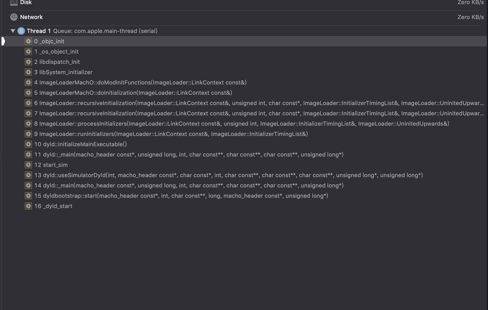

概述
数据结构与算法
iOS相关
1.1.1. runtime 启动
调用时机：

参考：https://bestswifter.com/runtime-category/
void _objc_init(void)
└──const char *map_2_images(...)
└──const char *map_images_nolock(...)
└──void _read_images(header_info **hList, uint32_t hCount)
void _objc_init(void)
{
static bool initialized = false;
if (initialized) return;
initialized = true;
// 读取Xcode 中的环境配置参数
environ_init();
tls_init();
static_init();
lock_init();
exception_init();
// === runtime 加载
// Register for unmap first, in case some +load unmaps something
// unmap_image
_dyld_register_func_for_remove_image(&unmap_image);
// map_2_images 中有部分初始化 和 read_images 操作
dyld_register_image_state_change_handler(dyld_image_state_bound,
1/*batch*/, &map_2_images);
// load_images
dyld_register_image_state_change_handler(dyld_image_state_dependents_initialized, 0/*not batch*/, &load_images);
}
调用 Mach-O 中 __objc_init_func 中定义的 函数 // Run C++ static constructor functions
static void static_init()
{
#if __OBJC2__
size_t count;
Initializer *inits = getLibobjcInitializers(&_mh_dylib_header, &count);
for (size_t i = 0; i < count; i++) {
inits[i]();
}
#endif
}
map_2_images 中的操作
const char *
map_images_nolock(enum dyld_image_states state, uint32_t infoCount,
const struct dyld_image_info infoList[])
{
static bool firstTime = YES;
static bool wantsGC = NO;
uint32_t i;
header_info *hi;
header_info *hList[infoCount];
uint32_t hCount;
size_t selrefCount = 0;
// Perform first-time initialization if necessary.
// This function is called before ordinary library initializers.
// fixme defer initialization until an objc-using image is found?
if (firstTime) {
preopt_init();
}
// Find all images with Objective-C metadata.
hCount = 0;
i = infoCount;
while (i--) {
const headerType *mhdr = (headerType *)infoList[i].imageLoadAddress;
hi = addHeader(mhdr);
if (!hi) {
// no objc data in this entry
continue;
}
if (mhdr->filetype == MH_EXECUTE) { // 可执行文件中加载 objc 的 meta info
// Size some data structures based on main executable's size
size_t count;
// 读取 __objc_selrefs
_getObjc2SelectorRefs(hi, &count);
selrefCount += count;
// 读取 __objc_msgrefs
_getObjc2MessageRefs(hi, &count);
selrefCount += count;
}
hList[hCount++] = hi;
}
if (firstTime) {
// 首次 初始化 selector table 并且把上面读取的 SEL 注册到 table 中
// Initialize selector tables and register selectors used internally
sel_init(wantsGC, selrefCount);
// 初始化 AutoreleasePoolPage 和 存储引用计数的 StripedMap<SideTable>
arr_init();
}
// 类、方法、协议、category 加载
_read_images(hList, hCount);
firstTime = NO;
return NULL;
}
sel_init(wantsGC, selrefCount); 中注册了部分 SEL
#define s(x) SEL_##x = sel_registerNameNoLock(#x, NO)
#define t(x,y) SEL_##y = sel_registerNameNoLock(#x, NO)
sel_lock();
s(load);
s(initialize);
t(resolveInstanceMethod:, resolveInstanceMethod);
t(resolveClassMethod:, resolveClassMethod);
t(.cxx_construct, cxx_construct);
t(.cxx_destruct, cxx_destruct);
s(retain);
s(release);
s(autorelease);
s(retainCount);
s(alloc);
t(allocWithZone:, allocWithZone);
s(dealloc);
s(copy);
s(new);
s(finalize);
t(forwardInvocation:, forwardInvocation);
t(_tryRetain, tryRetain);
t(_isDeallocating, isDeallocating);
s(retainWeakReference);
s(allowsWeakReference);
sel_unlock();
#undef s
#undef t
arr_init 初始化
void arr_init(void)
{
AutoreleasePoolPage::init();
SideTableInit(); // new (SideTableBuf) StripedMap<SideTable>();
}
_read_images 中执行的操作
从 __objc_classlist 加载 class
classref_t *classlist = _getObjc2ClassList(hi, &count);
for (i = 0; i < count; i++) {
Class cls = (Class)classlist[i];
Class newCls = readClass(cls, headerIsBundle, headerIsPreoptimized);
if (newCls != cls && newCls) {
// Class was moved but not deleted. Currently this occurs
// only when the new class resolved a future class.
// Non-lazily realize the class below.
resolvedFutureClasses = (Class *)
realloc(resolvedFutureClasses,
(resolvedFutureClassCount+1)
* sizeof(Class));
resolvedFutureClasses[resolvedFutureClassCount++] = newCls;
}
}
从 __objc_classrefs 读取 class
Class *classrefs = _getObjc2ClassRefs(hi, &count);
for (i = 0; i < count; i++) {
remapClassRef(&classrefs[i]);
}
// fixme why doesn't test future1 catch the absence of this?
classrefs = _getObjc2SuperRefs(hi, &count);
for (i = 0; i < count; i++) {
remapClassRef(&classrefs[i]);
}
注册 SEL
SEL *sels = _getObjc2SelectorRefs(hi, &count);
UnfixedSelectors += count;
for (i = 0; i < count; i++) {
const char *name = sel_cname(sels[i]);
sels[i] = sel_registerNameNoLock(name, isBundle);
}
从 __objc_protolist 读取 protocol
protocol_t **protolist = _getObjc2ProtocolList(hi, &count);
for (i = 0; i < count; i++) {
readProtocol(protolist[i], cls, protocol_map,
isPreoptimized, isBundle);
}
从 __objc_catlist 加载 category
加载完 category 后，重新 设置 class method list
category_t **catlist =
_getObjc2CategoryList(hi, &count);
for (i = 0; i < count; i++) {
category_t *cat = catlist[i];
Class cls = remapClass(cat->cls);
if (!cls) {
// Category's target class is missing (probably weak-linked).
// Disavow any knowledge of this category.
catlist[i] = nil;
if (PrintConnecting) {
_objc_inform("CLASS: IGNORING category \?\?\?(%s) %p with "
"missing weak-linked target class",
cat->name, cat);
}
continue;
}
// 加载完 category 后，会重新调整 class method list
// Process this category.
// First, register the category with its target class.
// Then, rebuild the class's method lists (etc) if
// the class is realized.
bool classExists = NO;
if (cat->instanceMethods || cat->protocols
|| cat->instanceProperties)
{
addUnattachedCategoryForClass(cat, cls, hi);
if (cls->isRealized()) {
remethodizeClass(cls);
classExists = YES;
}
if (PrintConnecting) {
_objc_inform("CLASS: found category -%s(%s) %s",
cls->nameForLogging(), cat->name,
classExists ? "on existing class" : "");
}
}
if (cat->classMethods || cat->protocols
/* || cat->classProperties */)
{
addUnattachedCategoryForClass(cat, cls->ISA(), hi);
if (cls->ISA()->isRealized()) {
remethodizeClass(cls->ISA());
}
if (PrintConnecting) {
_objc_inform("CLASS: found category +%s(%s)",
cls->nameForLogging(), cat->name);
}
}
}
1.1.2. load_images
调用 load 方法
const char *
load_images(enum dyld_image_states state, uint32_t infoCount,
const struct dyld_image_info infoList[])
{
bool found;
// 判断是否有 load 方法
// Return without taking locks if there are no +load methods here.
found = false;
for (uint32_t i = 0; i < infoCount; i++) {
if (hasLoadMethods((const headerType *)infoList[i].imageLoadAddress)) {
found = true;
break;
}
}
if (!found) return nil;
recursive_mutex_locker_t lock(loadMethodLock);
// Discover load methods
{
rwlock_writer_t lock2(runtimeLock);
found = load_images_nolock(state, infoCount, infoList);
}
// Call +load methods (without runtimeLock - re-entrant)
if (found) {
call_load_methods();
}
return nil;
}
// 判断是否 有 load 的 class 和 category
bool hasLoadMethods(const headerType *mhdr)
{
size_t count;
// 在 Mach-O 中对应的 __objc_nlclslist
if (_getObjc2NonlazyClassList(mhdr, &count) && count > 0) return true;
// 在 Mach-O 中对应 __objc_nlcatlist
if (_getObjc2NonlazyCategoryList(mhdr, &count) && count > 0) return true;
return false;
}
void call_load_methods(void)
{
static bool loading = NO;
bool more_categories;
loadMethodLock.assertLocked();
// Re-entrant calls do nothing; the outermost call will finish the job.
if (loading) return;
loading = YES;
void *pool = objc_autoreleasePoolPush();
do {
// 首先会把所有的 class 的 load 调用完
// 1. Repeatedly call class +loads until there aren't any more
while (loadable_classes_used > 0) {
call_class_loads();
}
// 开始 调用 category 的 load
// 2. Call category +loads ONCE
more_categories = call_category_loads();
// 3. Run more +loads if there are classes OR more untried categories
} while (loadable_classes_used > 0 || more_categories);
objc_autoreleasePoolPop(pool);
loading = NO;
}